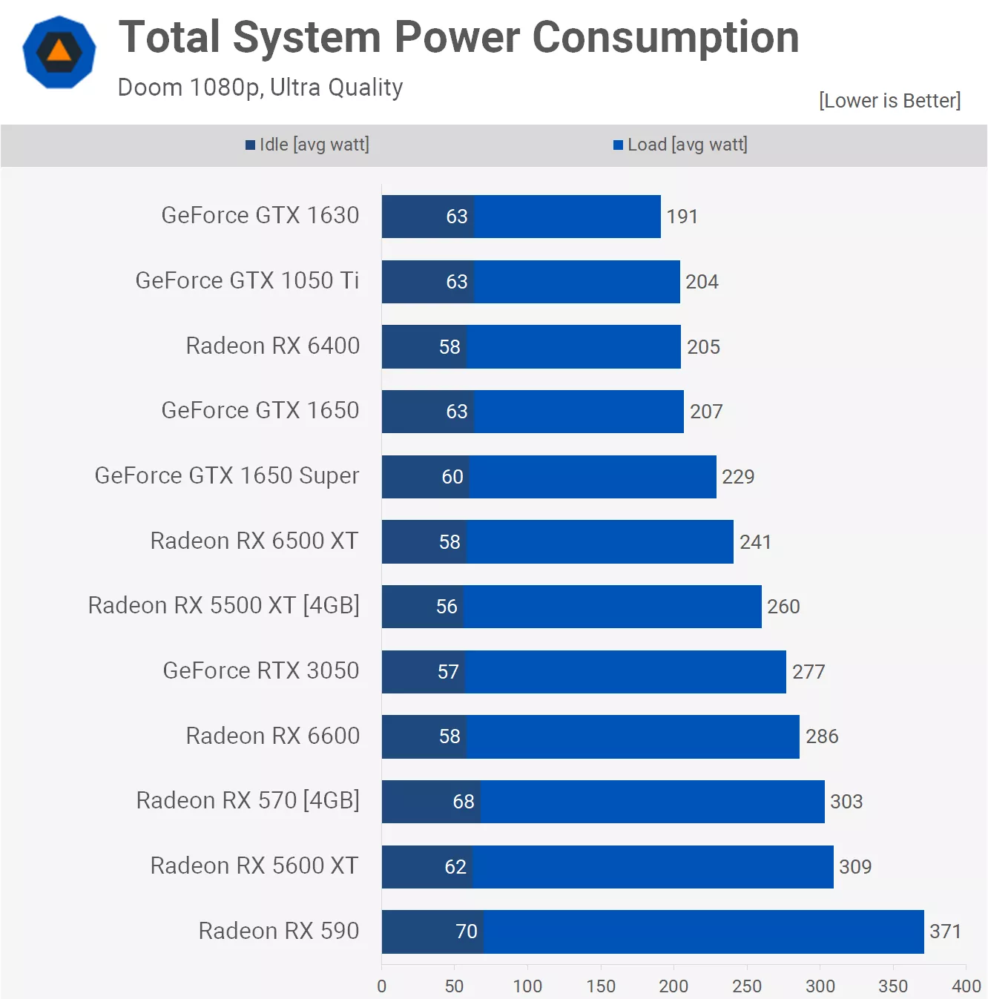
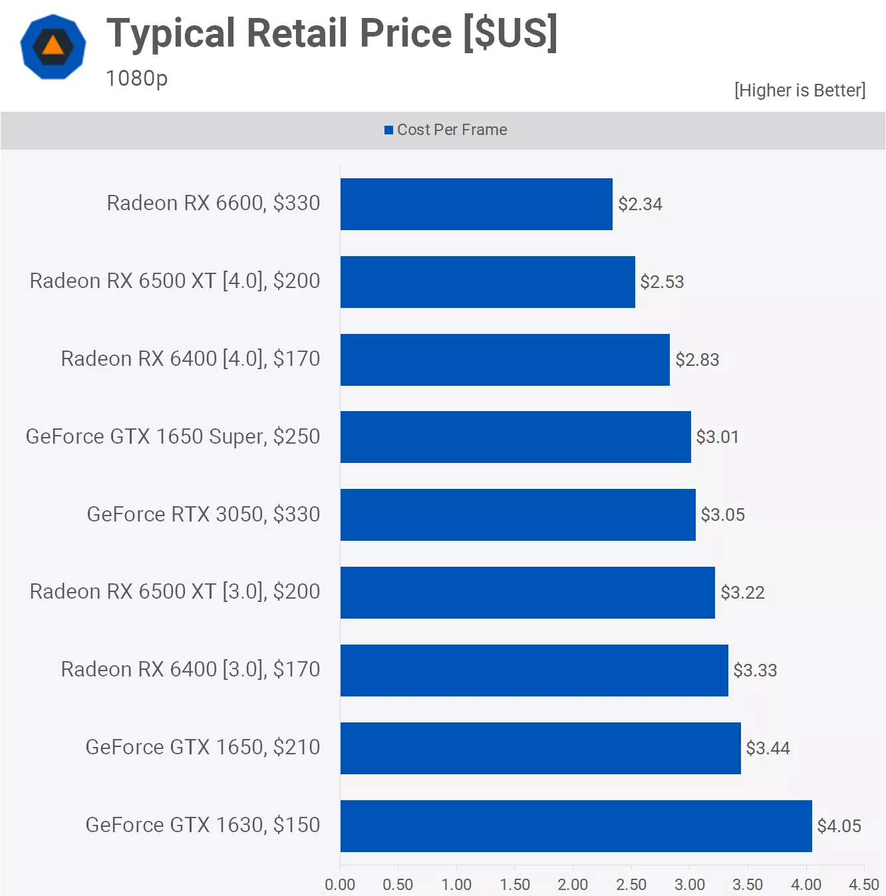
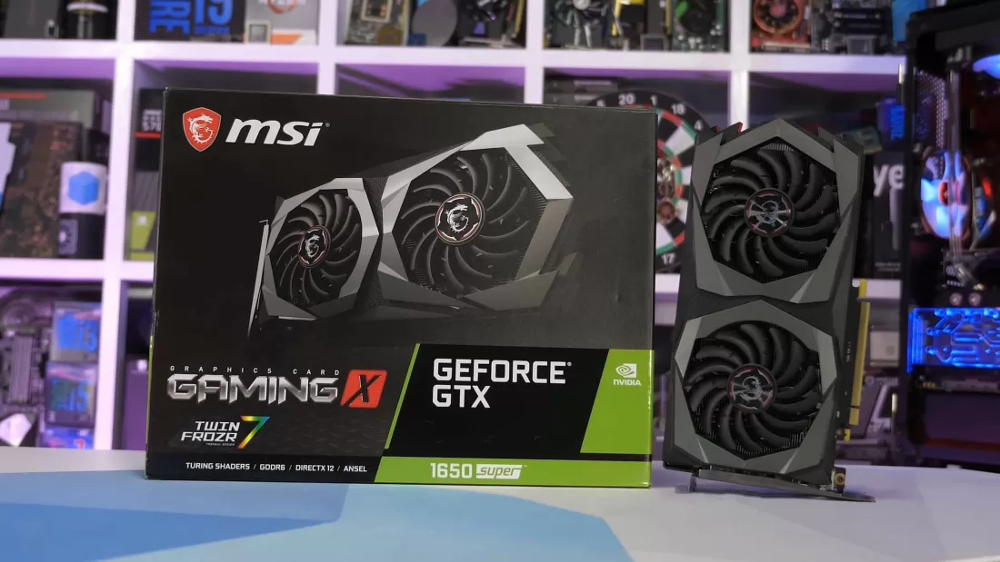
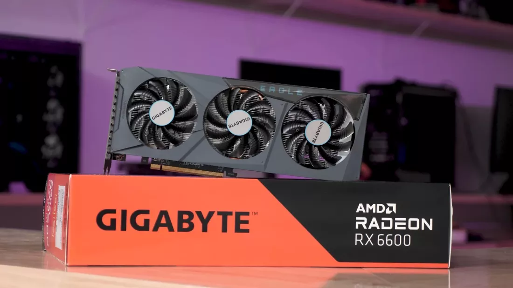

Profile
GeForce GTX 1630 adalah lineup GPU Nvidia terbaru yang merupakan seri lite dari GTX 1650. GeForce GTX 1630 hadir menggunakan die sebesar 200mm2 dengan code TU117 tetapi hanya menggunakan 42% cores (512 cores), 42% texture mapping units, dan 16 render units dibandingkan dengan GTX 1650. Memiliki core clock frequency lebih besar dari GTX 1650 sekitar 7% di 1.785 MHz, tetapi sangat disayangkan hanya memiliki 64-bit wide memory bus dengan 4 GB GDDR6 memory, memiliki bandwidth hanya sebesar 96 GB/s, ini lebih rendah sekitar 25% dari GTX 1650.
Benchmarks
Dari hasil rata-rata 12 game diatas, dapat dipastikan bahwa performa GTX 1630 tidak memadai untuk gaming, dengan rata-rata 37 fps, yang berarti GTX 1050 Ti lebih cepat 16% dan RX 6400 juga lebih cepat hampir 40% walaupun hanya menggunakan koneksi PCIe 3.0 dan 60% jika menggunakan PCIe 4.0. GTX 1650 juga lebih cepat sekitar 65% dan RX 570 hampir 80% lebih cepat.
Power Consumption

GeForce GTX 1630 menggunakan daya yang hampir sama dengan pendahulunya yaitu GTX 1650, menggunakan 75W catu daya yang berarti kartu ini membutuhkan daya eksternal untuk beroperasi di konektor PCIe x16. Karena hal itulah GeForce GTX 1630 dari Gainward dengan model 'Ghost' menggunakan tambahan 6-pin PCIe power connector sebagai daya eksternal tambahan.
Cost per Frame
Dari data di atas dapat dipastikan cost per frame akan buruk, sehingga anda tidak seharusnya mempertimbangkan untuk membeli GeForce GTX 1630. Sangat jarang melihat GPU baru entry-level dengan performa seburuk ini, tetapi GeForce GTX 1630 memiliki nilai tinggi yang sayangnya bukan pada hal yang baik.

GPU baru ini memiliki harga mulai dari $150 (Rp2.255.000), dan itu merupakan value yang buruk bahkan terburuk yang pernah ada.
Conclusion
Geforce GTX 1630 sangat tidak cocok jika dipasarkan dengan gimmick gaming graphics card. Tidak dapat dipastikan masa depan dari produk ini kecuali dijual dengan harga kurang dari $100 (Rp1.500.000).
GeForce GTX 1650 Super

Jika kamu sedang mencari GPU dengan rentang harga $100-$200 (Rp1.500.0000-Rp2.255.000), untuk saat ini saya menyarankan membelinya dengan kondisi second hand market (bekas). Dapat dilihat di market online, kamu dapat menemukan GTX 1650 Super hanya sekitar $150 (Rp.2.255.000). Hal itu sangat murah, karena jika membandingkan performa antara GTX 1630 dan GTX 1650 Super, maka didapatkan GTX 1650 Super memiliki yang performa lebih tinggi terpaut sekitar 125%.
Radeon RX 6600

Dan jika kamu tidak menginginkan GPU second hand market (bekas), kamu lebih baik menambah budget sedikit untuk mendapatkan Radeon RX 6600, yang dapat dilihat dari data di atas menujukkan bahwa Radeon RX 6600 memiliki performa yang baik walaupun memiliki rentang harga sekitar $300 (Rp4.500.000).